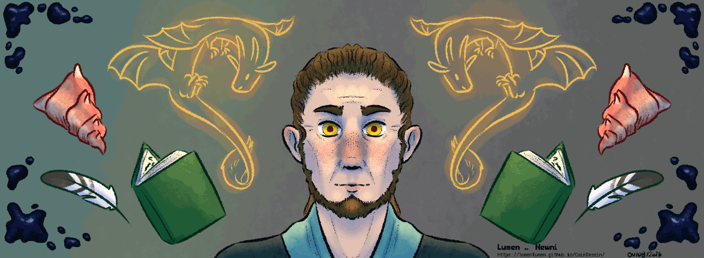
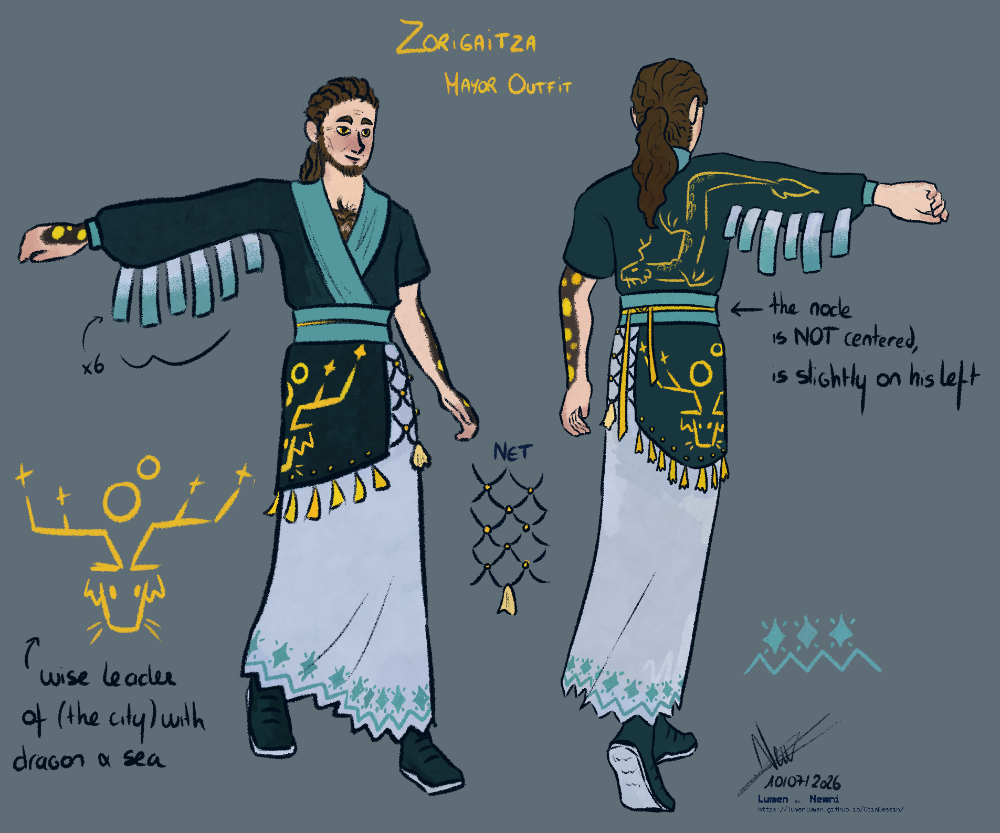
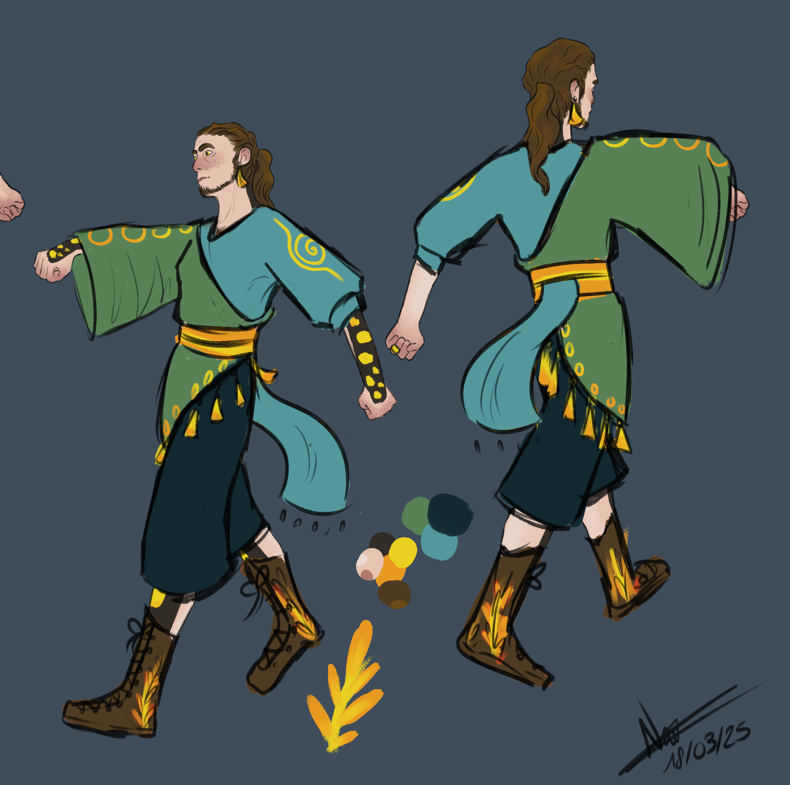
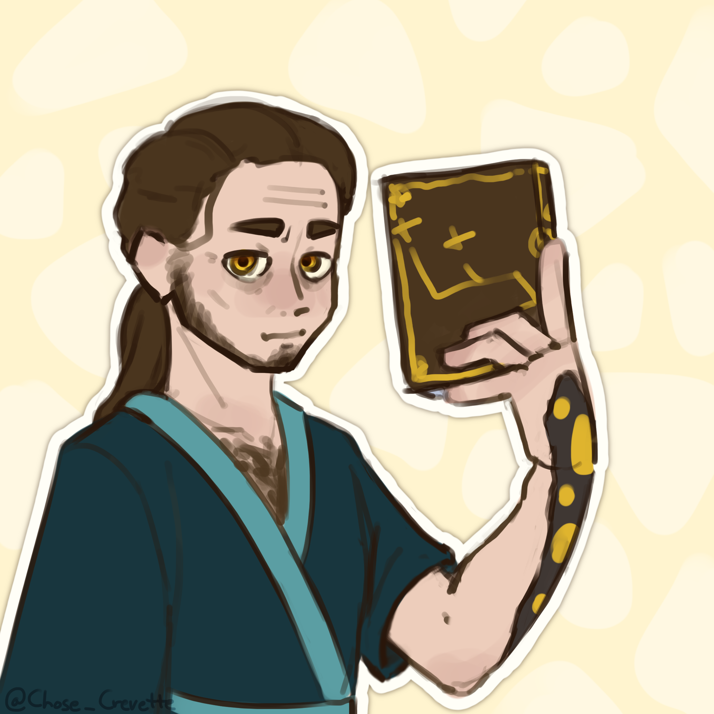
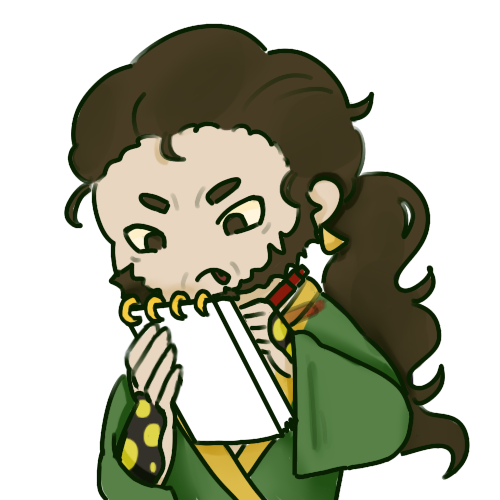
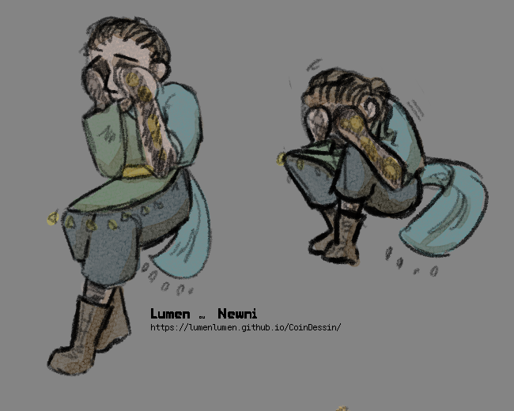

Made by Newni41 years old | 5'9"
Zorigaitza is the mayor of Chapelle d'Orée. He is a former nobleman, although he hasn’t retained much of that background. He lives alone in a house in the town centre. However, he spends more time away from home than at home. Before being elected, he was a bookseller.
MAGIC
Zorigaitza can breathe fire and warm the air around him.
NOTES
- Zorigaitza has salamander-like markings on his skin. He has a beard and wavy hair. His earrings are optional (he usually wears them when he’s in private).
- Zorigaitza lives alone, although he would have liked to start a family. He suffers greatly from this loneliness, which he tends to drown out with work.
- He does things for the underprivileged and helps those in need through his work as mayor. He is aware of people’s suffering. However, he can find it a little difficult to express his empathy sincerely, a shortcoming he compensates for with a certain ease with social conventions. He is generally awkward when it comes to matters of the heart.
- Zorigaitza loves reading; he is passionate about the history of Chapelle d’Orée and its legends. He is often seen as a bit of a nerd on the subject.
- He speaks well and is very comfortable speaking in public. His speeches are convincing, and he manages very well to hide his nerves when speaking in public.
- He is a bit stubborn; it is difficult to change his mind, and he sometimes finds it a bit hard to question his own views.
- Everyone calls him by his honorary title of mayor because no one can pronounce his name.
IDEAS
- Zorigaitza is giving a speech to a group of villagers.
- Zorigaitza is sitting in an armchair, reading a thick book on the history of the town.
- Zorigaitza is tidying up his impressive personal library. He nearly gets crushed by a pile of books.
- Zorigaitza is chatting with people and suddenly bombards them with information about the town’s past.
- Zorigaitza signs paperwork by candlelight.
DON'T
- Don’t draw him looking any younger — he’s already got a few wrinkles!
- Don’t put makeup on him, he is allergic.
ALLOWED DESIGN CHANGES
- You can remove his earrings.
REFERENCES

Made by NewniMayor outfit
This is the official mayoral robe of Zorigatiza. It features numerous emblems of the city, including references to the golden guardian dragon, which is the city’s symbol. The fishing net symbolizes fishing, an activity that has always played a significant role in the history of Chapelle d’Orée. Blue represents the ocean, while the stars at the bottom of the robe symbolize knowledge and wisdom—qualities one can expect from a leader. The design on the side of the robe is the town’s emblem.
Please use this outfit if you’re portraying the mayor!

Made by NewniDaily outfit
Zorigaitza wears this outfit when he's off duty. He only wears his earrings when he's in private; he doesn't go out in public with them on.
41 ans | 175 cm
Zorigaitza est le maire de Chapelle d’Orée. C’est un ancien noble, bien qu’il n’ait pas gardé grand-chose de ses origines. Il vit seul dans une maison du centre-ville. Cependant, il passe plus de temps à l’extérieur de chez lui qu’à l’intérieur. Avant d’être élu, il était libraire.
MAGIE
Zorigaitza peut cracher du feu et réchauffer l’air autour de lui.
NOTES
- Zorigaitza a des marques semblables à celles d’une salamandre sur la peau. Il a une barbe et des cheveux ondulés. Ses boucles d’oreilles sont optionnelles (il les porte généralement lorsqu’il est en privé).
- Zorigaitza vit seul, bien qu’il aurait aimé fonder une famille. Il souffre beaucoup de cette solitude, qu’il a tendance à noyer dans le travail.
- Il agit pour les plus démunis et aide les personnes dans le besoin à travers son travail de maire. Il est conscient de la souffrance des gens. Cependant, il peut avoir un peu de mal à exprimer sa sincère empathie, un défaut qu’il compense par une certaine aisance avec les conventions sociales. Il est généralement maladroit lorsqu’il s’agit d’affaires de cœur.
- Zorigaitza adore lire ; il est passionné par l’histoire de Chapelle d’Orée et ses légendes. Il est souvent perçu comme un peu “nerd” sur le sujet.
- Il s’exprime bien et est très à l’aise pour parler en public. Ses discours sont convaincants, et il réussit très bien à masquer son stress lorsqu’il s’exprime devant une foule.
- Il est un peu têtu ; il est difficile de lui faire changer d’avis, et il a parfois du mal à remettre en question ses propres points de vue.
- Tout le monde l’appelle par son titre honorifique de maire parce que personne n’arrive à prononcer son nom.
IDÉES
- Zorigaitza prononce un discours devant un groupe de villageois.
- Zorigaitza est assis dans un fauteuil, lisant un épais ouvrage sur l’histoire de la ville.
- Zorigaitza range son impressionnante bibliothèque personnelle. Il manque de se faire écraser par une pile de livres.
- Zorigaitza discute avec des gens et les bombarde soudainement d’informations sur le passé de la ville.
- Zorigaitza signe des documents officiels à la lueur d’une bougie.
À NE PAS FAIRE
- Ne le dessinez pas plus jeune — il a déjà quelques rides !
- Ne lui ajoutez pas de maquillage, il y est allergique.
MODIFICATIONS DU DESIGN AUTORISÉES
- Vous pouvez lui retirer ses boucles d’oreilles.
RÉFÉRENCES
Tenue de maire
C'est la tenue officielle de maire de Zorigatiza. On y retrouve de nombreux emblèmes de la ville, notamment des références au dragon protecteur doré qui est le symbole de la ville. Le filet symbolise la pêche, une acitivité qui a toujours été très présente dans l'histoire de Chapelle d'Orée.Le bleu est la couleur de l'océan tandis que les étoiles en bas de sa robe symbolise la connaissance et la sagesse, ce que l'on peut atteindre d'un dirigeant. Le dessin sur le côté de sa robe est l'insigne de la ville.
Merci d'utiliser cette tenue si vous le représenter en tant que maire !
Tenue quotidienne
Zorigaitza porte cette tenue quand il est sur son temps personnel. Il ne porte ses boucles d'oreille que s'il est en privé, il ne sort pas dans la rue avec.
PLUS D'INFORMATIONS

Made by Chose_CrevetteZorigaitza est le maire de Chapelle d’Orée depuis bientôt dix ans. Il n’a pas de compagne ou d’enfants. Tout son temps est consacré à la ville et à ses fonctions. Il a une politique plutôt socialiste et est globalement apprécié par la population. Son mandat touche à sa fins, sera-t-il réélu ?
Il a des motifs de salamandre sur sa peau. Sa magie lui permet de cracher du feu ou de réchauffer l'air autour de lui. Il peut manier le sabre, bien qu'il soit plutôt moyen dans cette discipline. Il se promène rarement avec une arme et pratiquait lorsqu'il en avait encore le temps.
De prime abord, Zorigaitza est un homme calme et cultivé. Il n’est pas bavard, préférant généralement écouter et observer. Il est plutôt attentif à ce qui se passe autour de lui et consigne méthodiquement ce qui lui paraît important. Il est souvent concis et organisé, il essaie d’être pédagogue avec ses concitoyens. Il essaie sincèrement de remplir son rôle avec le plus de justesse et de transparence possible.
Zorigaitza est quelqu'un de sensible, bien qu'il cache souvent cette part de lui, la considérant comme une faiblesse. Il est réceptif à la souffrance des autres. Cela lui donne souvent la force de se battre pour ses concitoyens, de faire avancer les choses pour le mieux. Il prend son rôle de maire très à cœur, son sens des responsabilités est aiguisé. C’est quelque chose qui a imprégné son mode de fonctionnement au cours de son mandat.
Zorigaitza est un lecteur aguerri. Il avale des ouvrages d’une traite sans souci. Il est cultivé, connaît les grands classiques de la littérature et partage volontiers ses trouvailles. On sent qu'il était libraire et que c’est un passionné. Il adore l’Histoire et raffole de petites anecdotes du passé. Il est particulièrement savant sur l’histoire de Chapelle d'Orée et la transmet dès qu'il en a l’occasion. Il consigne lui-même des petites aventures du présent pour les historiens du futur. Il a conscience de faire partie de l’Histoire.
Zorigaitza est en réalité quelqu'un qui se sent très seul. Son échec dans la fondation d’une famille pèse lourd. Il passe peu de temps chez lui, fuyant cette réalité. Personne ne l’attend chez lui. À la mairie, il y a toujours une pile de documents, une réunion, un citoyen mécontent, une réclamation qui l’attend. Chez lui, tout lui semble vide. Sa maison tend à être poussiéreuse, assez peu entretenue. Zorigaitza prend rarement le temps de cuisiner pour lui et il revient souvent de la mairie avec de quoi occuper sa soirée.

Made by Seiqyu
Made by Newni
Ayant grandi dans une société profondément homophobe, il a honte d’aimer les hommes. C’est son secret. Additionné à son absence de famille, cela lui apporte souvent des pensées coupables qu'il noie dans le travail. Il ne prend pas beaucoup de temps pour lui ou pour s'écouter. Cette fuite en avant est son mode de fonctionnement depuis longtemps. Il commence cependant à en prendre conscience, notamment depuis qu'un certain dragon l’a convaincu que ce n’était pas un drame d’être gay.
Zorigaitza est plutôt extraverti. Il aime passer du temps avec les autres, que ce soit des moments festifs ou des moments plus calmes. Plutôt à l’aise avec les autres, il aime faire de nouvelles rencontres et écouter les opinions. Ses relations restent généralement cordiales et il a peu de vrais amis. Il a la fâcheuse tendance à dump des informations aléatoires sur l’histoire de la ville quand il est un peu trop à l’aise, ce qui peut agacer son auditoire. Sinon, il est plutôt apprécié.
Zorigaitza tend à accorder beaucoup d’attention au regard de l’autre. Il est parfois partagé entre ce dont il a envie et les potentielles réactions négatives des gens. Passer le cap peut être une bataille longue et difficile contre lui-même, parfois même sans considérer son image de maire.
Zorigaitza n’est pas particulièrement sujet au stress vis-à-vis de son travail, malgré l’importance qu'il donne à ses missions. Il est particulièrement attaché aux valeurs démocratiques du régime (il a participé à la révolution plus jeune). Il les protège, les transmet et les concrétise au maximum. Il aime parfois débattre sur la question de « comment organiser la démocratie ? ».
Il est plutôt éloquent, n’ayant généralement pas trop de mal à trouver ses discours. Il est facilement compréhensible dans la plupart des situations. Il a du bagou, mine de rien. Il est bon diplomate et négociateur.
Face au danger immédiat et physique, Zorigaitza a souvent le réflexe de se protéger, plus que de fuir. Il est capable de s’interposer face à une situation qui dégénère devant lui avec une assurance feinte. Capable de bluffer ou d’intimider, il reste plutôt faible si jamais il faut en venir aux mains.
GALERIE
CREDIT
Hover over the images to see the artist's name and link.
Original design by Newni.